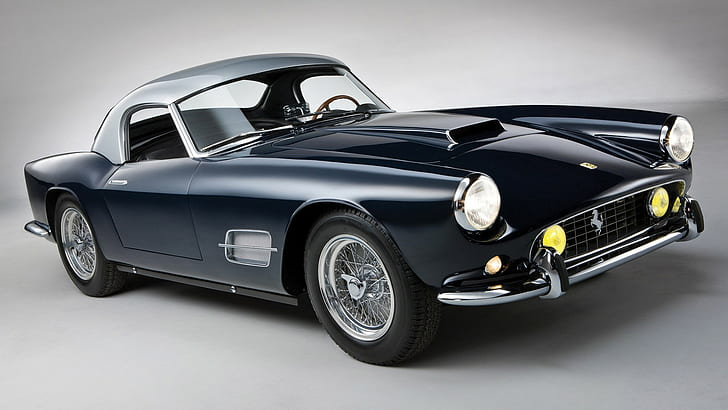

History
Enzo Ferrari was not initially interested in the idea of producing road cars when he formed Scuderia Ferrari in 1929, with headquarters in Modena.
Scuderia Ferrari literally means "Ferrari Stable" and is usually used to mean "Team Ferrari." Ferrari bought,[citation needed] prepared, and fielded Alfa Romeo racing cars for gentleman drivers, functioning as the racing division of Alfa Romeo.
In 1933, Alfa Romeo withdrew its in-house racing team and Scuderia Ferrari took over as its works team:the Scuderia received Alfa's Grand Prix cars of the latest specifications and fielded many famous drivers such as Tazio Nuvolari and Achille Varzi.
In 1938, Alfa Romeo again brought its racing operation in-house, forming Alfa Corse in Milan and hired Enzo Ferrari as manager of the new racing department; thereby disbanding the Scuderia Ferrari.
In September 1939, Ferrari left Alfa Romeo under the provision he would not use the Ferrari name in association with races or racing cars for at least four years.
A few days later he founded Auto Avio Costruzioni, with headquarters in the facilities of the old Scuderia Ferrari.
The new company ostensibly produced machine tools and aircraft accessories. In 1940, Ferrari produced a racing car – the Tipo 815, based on a Fiat platform.
It was the first Ferrari car and debuted at the 1940 Mille Miglia, but due to World War II it saw little competition.
In 1943, the Ferrari factory moved to Maranello, where it has remained ever since.
The factory was bombed by the Allies and subsequently rebuilt including works for road car production.
The first Ferrari-badged car was the 1947 125 S, powered by a 1.5 L V12 engine;Enzo Ferrari reluctantly built and sold his automobiles to fund Scuderia Ferrari.
The Scuderia Ferrari name was resurrected to denote the factory racing cars and distinguish them from those fielded by customer teams.
In 1960, the company was restructured as a public corporation under the name SEFAC S.p.A. (Società Esercizio Fabbriche Automobili e Corse).
Early in 1969, Fiat took a 50% stake in Ferrari.
An immediate result was an increase in available investment funds, and work started at once on a factory extension intended to transfer production from Fiat's Turin plant of the Ferrari-engined Fiat Dino.
New model investment further up in the Ferrari range also received a boost.
In 1988, Enzo Ferrari oversaw the launch of the Ferrari F40, the last new Ferrari launched before his death later that year.
In 1989, the company was renamed Ferrari S.p.A.
From 2002 to 2004, Ferrari produced the Enzo, their fastest model at the time, which was introduced and named in honour of the company's founder, Enzo Ferrari.
It was to be called the F60, continuing on from the F40 and F50, but Ferrari was so pleased with it, they called it the Enzo instead.
It was initially offered to loyal and recurring customers, each of the 399 made (minus the 400th which was donated to the Vatican for charity) had a price tag of $650,000 apiece (equivalent to £400,900).
[citation needed]
On 15 September 2012, 964 Ferrari cars worth over $162 million (£99.95 million) attended the Ferrari Driving Days event at Silverstone Circuit and paraded round the Silverstone Circuit setting a world record.
Ferrari's former CEO and Chairman, Luca di Montezemolo, resigned from the company after 23 years, who was succeeded by Amedeo Felisa and finally on 3 May 2016 Amedeo resigned and was succeeded by Sergio Marchionne, CEO and Chairman of Fiat Chrysler Automobiles, Ferrari's parent company.
In July 2018, Marchionne was replaced by board member Louis Camilleri as CEO and by John Elkann as chairman.
On 29 October 2014, the FCA group, resulting from the merger between manufacturers Fiat and Chrysler, announced the split of its luxury brand, Ferrari.
The aim was to turn Ferrari into an independent brand, 10% of whose stake would be sold in an IPO in 2015.
Ferrari officially priced its initial public offering at $52 a share after the market close on 20 October 2015.
On 10 December 2020, CEO Louis Camilleri announced that he will step down as CEO and chairman John Elkann will step in to the Interim CEO role until a permanent successor is selected.
On 9 June 2021, the company announced the appointment of Benedetto Vigna from Geneva-based STMicroelectronics as its next CEO starting September.
Ferrari cars


Motorsport
Since the company's beginnings, Ferrari has been involved in motorsport, competing in a range of categories including Formula One and sports car racing through its Scuderia Ferrari sporting division as well as supplying cars and engines to other teams and for one-make race series.
1940 AAC 815 was the first racing car to be designed by Enzo Ferrari, although it was not badged as a Ferrari model.
Scuderia Ferrari has participated in several classes of motorsport, though it is currently only officially involved in Formula One.
It is the only team to have competed in the Formula One World Championship continuously since its inception in 1950.
José Froilán González gave the team its first F1 victory at the 1951 British Grand Prix.
Alberto Ascari gave Ferrari its first Drivers Championship a year later.
Ferrari is the oldest team in the championship, and the most successful: the team holds nearly every Formula One record.
As of 2014, the team's records include 15 World Drivers Championship titles, 16 World Constructors Championship titles, 221 Grand Prix victories, 6736.27 points, 679 podium finishes, 207 pole positions, and 230 fastest laps in 890 Grands Prix contested.
Of the 19 tracks used in 2014, 8 have lap records set by the F2004, with a further 3 set by the F2003-GA, F2008 and F10.
Ferrari drivers include: Tazio Nuvolari, José Froilán González, Juan Manuel Fangio,
Alberto Ascari, Luigi Chinetti, Eugenio Castellotti, Maurice Trintignant, Wolfgang von Trips,
Phil Hill, Olivier Gendebien, Mike Hawthorn, Peter Collins, Giancarlo Baghetti, Ricardo Rodríguez, Chris Amon, John Surtees,
Lorenzo Bandini, Ludovico Scarfiotti, Jacky Ickx, Mario Andretti, Clay Regazzoni, Niki Lauda, Carlos Reutemann, Jody Scheckter,
Gilles Villeneuve, Didier Pironi, Patrick Tambay, René Arnoux, Michele Alboreto, Gerhard Berger, Nigel Mansell, Alain Prost,
Jean Alesi, Michael Schumacher, Eddie Irvine, Rubens Barrichello, Felipe Massa, Kimi Räikkönen, Fernando Alonso, Sebastian Vettel,
Charles Leclerc and Carlos Sainz Jr.
At the end of the 2006 season, the team courted controversy by continuing to allow Marlboro to sponsor them after they, along with the other F1 teams, made a promise to end sponsorship deals with tobacco manufacturers.
A five-year deal was agreed and although this was not due to end until 2011, in April 2008 Marlboro dropped their on-car branding on Ferrari.
In addition to Formula One, Ferrari also entered cars in sportscar racing, the two programs existing in parallel for many years.
In 1949, Luigi Chinetti drove a 166 M to Ferrari's first win in motorsports, the 24 Hours of Le Mans.
Ferrari went on to dominate the early years of the World Sportscar Championship which was created in 1953, winning the title seven out of its first nine years.
When the championship format changed in 1962, Ferrari earned titles in at least one class each year through to 1965 and then again in 1967.
Ferrari would win one final title, the 1972 World Championship of Makes before Enzo decided to leave sports car racing after 1973 and allow Scuderia Ferrari to concentrate solely on Formula One.
During Ferrari's seasons of the World Sportscars Championship, they also gained more wins at the 24 Hours of Le Mans, with the factory team earning their first in 1954.
Another win would come in 1958, followed by five consecutive wins from 1960 to 1964. Luigi Chinetti's North American Racing Team (NART) would take Ferrari's final victory at Le Mans in 1965.
Although Scuderia Ferrari no longer participated in sports cars after 1973, they have occasionally built various successful sports cars for privateers.
These include the 512 BB LM in the 1970s, the 333 SP which won the IMSA GT Championship in the 1990s, and currently the 458 GT2 and GT3 which are currently winning championships in their respective classes.
Current models
 |
296 GTB
296 GTS |
- Unveiled in 2021
- Rear mid-engine, rear-wheel drive
- Sports car
- PHEV Twin-turbo V6 engine
- Sports coupé / Hard-top convertible
|
 |
F8 Tributo
F8 Spider |
- Unveiled in 2019
- Rear mid-engine, rear-wheel drive
- Sports car
- Twin-turbo V8 engine
- Sports coupé / Hard-top convertible
|
 |
Portofino M |
- Unveiled in 2017
- Front-mid engine, rear-wheel drive
- 2+2 grand tourer
- Twin-turbo V8 engine
- Hard-top convertible
|
 |
812 Superfast
812 GTS
812 Competizione
812 Competizione A |
- Unveiled in 2017
- Front-mid engine, rear-wheel drive
- Grand tourer
- V12 engine
- Sports coupé / Hard-top convertible
|
 |
SF90 Stradale
SF90 Spider |
- Unveiled in 2019
- Rear-mid engine, four-wheel drive
- Sports car
- PHEV Twin-turbo V8 engine
- Sports coupé / Hard-top convertible
|
|
Roma |
- Unveiled in 2019
- Front mid-engine, rear-wheel drive
- 2+2 grand tourer
- Twin-turbo V8 engine
- Sports coup
|
Supercars

The 1984 288 GTO may be considered the first in the line of Ferrari supercars.
This pedigree extends through the Enzo Ferrari to the LaFerrari.
In February 2019, at the 89th Geneva International Motor Show, Ferrari revealed its latest mid-engine V8 supercar, the F8 Tributo.
Ferrari SF90 Stradale is the first-ever Ferrari to feature PHEV (Plug-in Hybrid Electric Vehicle) architecture which sees the internal combustion engine integrated with three electric motors,
two of which are independent and located on the front axle,
with the third at the rear between the engine and the gearbox.

Concept cars and specials
Ferrari has produced a number of concept cars, such as the Mythos.
While some of these were quite radical (such as the Modulo) and never intended for production,
others such as the Mythos have shown styling elements that were later incorporated into production models.
The most recent concept car to be produced by Ferrari themselves was the 2010 Millechili.
A number of one-off special versions of Ferrari road cars have also been produced,
commissioned to coachbuilders by wealthy owners. Recent examples include the P4/5 and the 612 Kappa.
Ferrari Special Projects
The Special Projects programme, also called the Portfolio Coachbuilding Programme, was launched in 2008 as a way to revive the tradition of past one-off and limited production coachbuilt Ferrari models, allowing clients to work with Ferrari and top Italian coachbuilders to create bespoke bodied models based on modern Ferrari road cars.
Engineering and design is done by Ferrari, sometimes in cooperation with external design houses like Pininfarina or Fioravanti, and the vehicles receive full homologation to be road legal.
Since the creation of Ferrari's in-house styling centre in 2010 though, the focus has shifted away somewhat from outside coachbuilders and more towards creating new in-house designs for clients.
The first car to be completed under this programme was the 2008 SP1, commissioned by a Japanese business executive.
The second was the P540 Superfast Aperta, commissioned by an American collector.
The following is a list of Special Projects cars that have been made public:
| Name |
Picture |
Year |
Based on |
Commissioned by |
Notes |
| SP1 |
|
2008 |
F430 |
Junichiro Hiramatsu |
Design by Leonardo Fioravanti, inspired by the 1998 F100 concept by Fioravanti. |
| P540 Superfast Aperta |
 |
2009 |
599 GTB |
Edward Walson |
Inspired by a similarly gold-painted and open-topped one-off built by Carrozzeria Fantuzzi on a Ferrari 330 LMB chassis.Design by Pininfarina |
| Superamerica 45 |
|
2011 |
599 GTB |
Peter Kalikow |
Rotating targa top;design by Ferrari Styling Centre |
| SP12 EC |
|
2012 |
458 Italia |
Eric Clapton |
Designed by Ferrari Styling Centre and Pininfarina, in homage to the 512 BB. |
| SP30 |
|
2013 |
599 GTO |
Cheerag Arya |
- |
| SP FFX |
|
2014 |
FF |
Shin Okamoto |
Design by Pininfarina |
| Ferrari F12 TRS |
 |
2014 |
F12berlinetta |
— |
Barchetta body, inspired by the Ferrari 250 Testa Rossa. Design by Ferrari Styling Centre. |
| Ferrari SP America |
 |
2014 |
F12berlinetta |
Danny Wegman |
Design by Pininfarina |
| Ferrari 458 MM Speciale |
|
2016 |
458 Speciale |
— |
Design by Ferrari Styling Centre. |
| SP275 RW Competizione |
 |
2016 |
F12tdf |
Rick Workman |
Inspired by the 1964 275 GTB/C Speciale. Design by Pininfarina in collaboration with Ferrari Styling Centre |
| Ferrari J50 |
 |
2017 |
488 Spider |
— |
Design by Ferrari Design Center team in Maranello directed by Flavio Manzoni. |
| SP38 |
 |
2018 |
488 GTB |
— |
Inspired by the F40 and 308 |
| Ferrari SP3JC |
|
2018 |
F12tdf |
John Collins |
Designed by the Ferrari Styling Centre. Two matching cars ordered, one in LHD, the other in RHD with different liveries.
Took 3.5 years to complete. Presented in 2018. |
| P80/C |
|
2019 |
488 GT3 |
— |
One-off track-only car inspired by the 330 P3, 330 P4 and the Dino 206 S. |
| Ferrari Omologata |
|
2020 |
Ferrari 812 Superfast |
— |
Design by Ferrari Design Center team in Maranello directed by Flavio Manzoni |
classic cars
